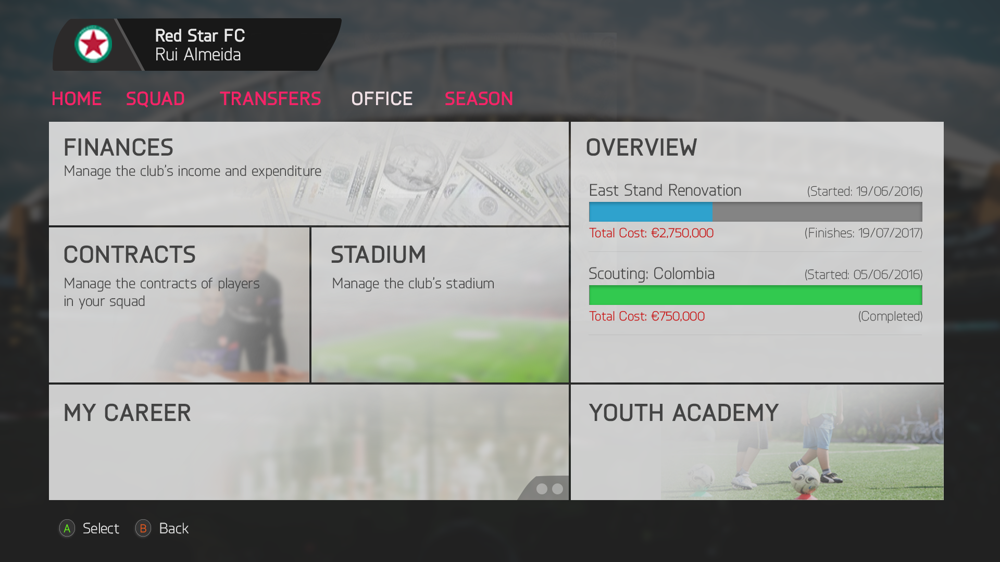
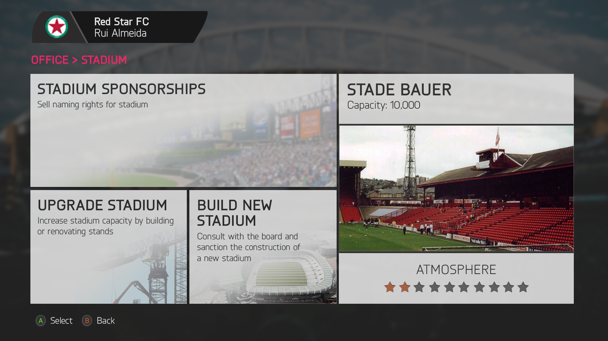
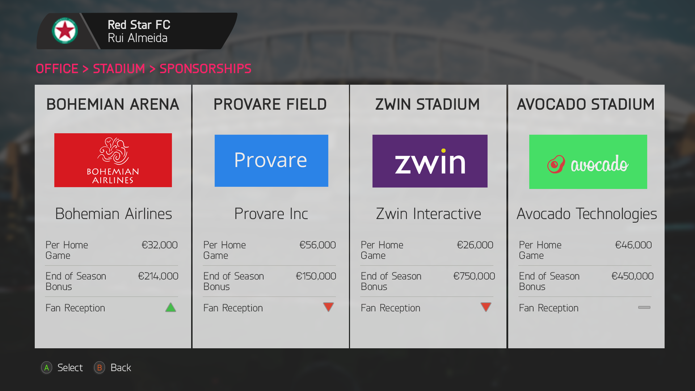
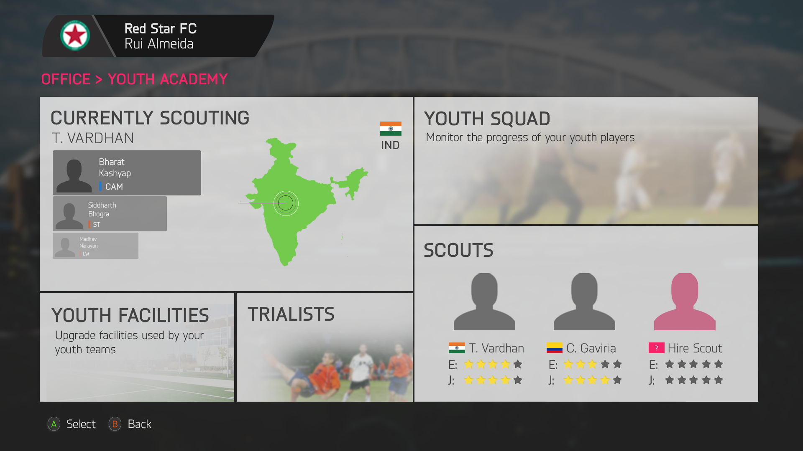

This was a fun project I pursued during Spring Break in 2016, and is still a Work in Progress. I plan to spend more time on it and improve it for the next franchise, FIFA 18!
An attempt at designing interfaces for my favorite video game
| Project Type | Salient Skills | Timeline | Tools | |
|---|---|---|---|---|
| Personal | UI/UX Design | 1 week | Photoshop | Unavailable |




This was a fun project I pursued during Spring Break in 2016, and is still a Work in Progress. I plan to spend more time on it and improve it for the next franchise, FIFA 18!